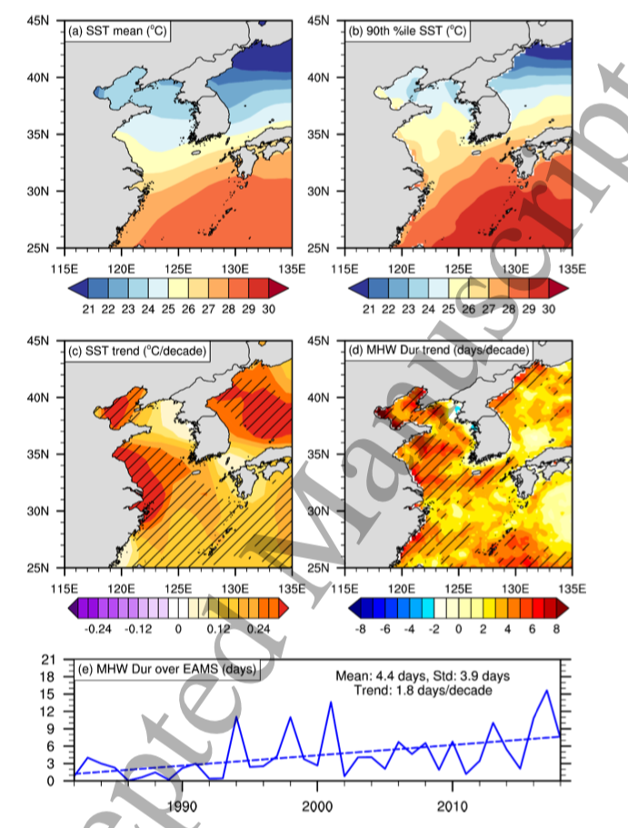
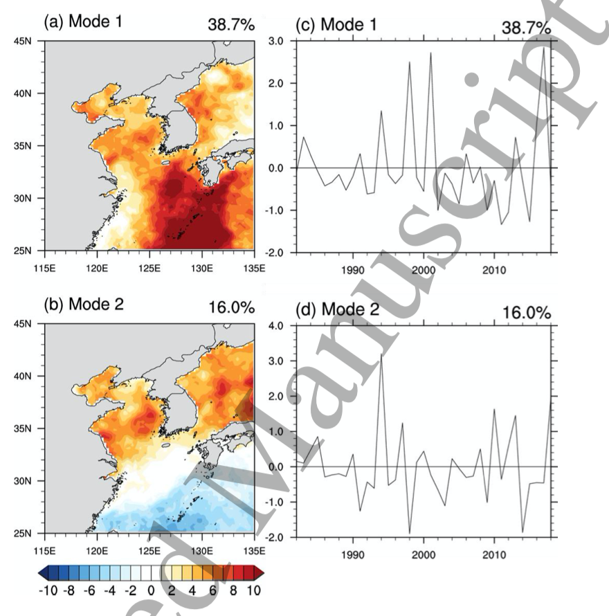
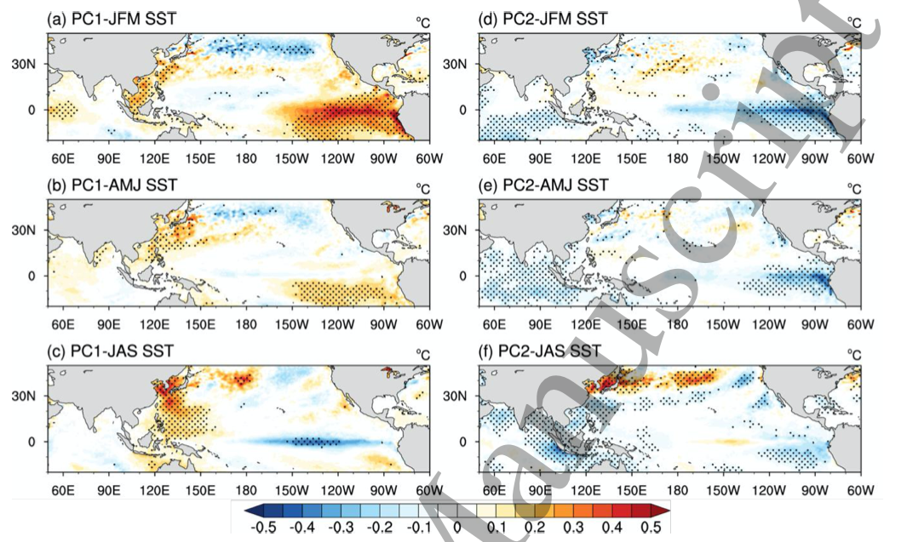
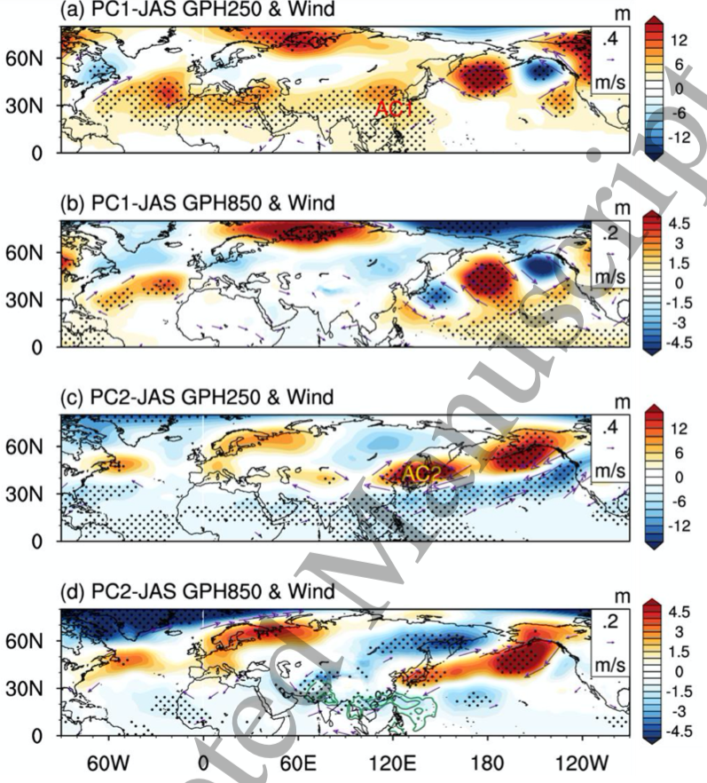
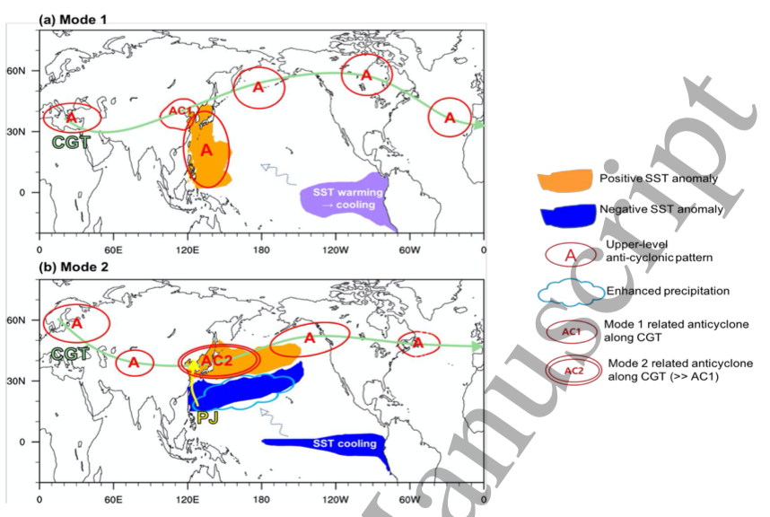

20-06-23 - Lee et al.-2020-Two modes of East Asian MHW
Ref: Lee et al 2020 Environ. Res. Lett. in press https://doi.org/10.1088/1748-9326/ab8527
1. What data did the author use in this paper?
-
Satellite observation: National Oceanic and Atmospheric Administration (NOAA) Optimum Interpolation (OI) SST data (OISST; Reynolds et al 2002),
1982~2018, $0.25^o\times0.25^o$, daily.
Variable : SST
-
Model data: NASA Modern-Era Retrospective Analysis for Research and Application Version 2 (MERRA2; Gelaro et al 2017)
$0.5^o\times 0.625^o$, 72 levels from surface to 0.01 hPa
Variable: geopotential height fields.
-
Global Precipitation Climatology Project (GPCP) data
Variable: Precipitation
2. What methods did the author use?
- EOF
- Linear Regression
3. what are their most important findings or conclusions (up to 3)?
4. what do you find most interesting about their research?
5. would you have done the research differently, to improve it, if it was you doing it?
6. Results:
-
figure 1.
- Mean SST warming can explain most of the MHW duration increasing. (c) explains (d)
- (c): increasing trend is not significant everywhere.

Figure 1. Seasonal mean of (a) SST and (b) 90th percentile of daily SST using OISST data for 1982‒2011, and long-term trends of (c) seasonal mean and (d) total MHW duration days for 1982‒2018. (e) Time series of total MHW duration (solid line) with a least-square linear fit (dashed line). The dashed regions in (c) and (d) indicate the area where the trends of SST and MHWs are significant with confidence level.
- (e): exihibut a strong interannual variation as well as a positive rend.
-
Figure 2.

Figure 2. Spatial patterns of the two primary modes of the EOF of East Asian MHW duration in the left
panels ((a) and (b)) and the associated PC time series of two principal components in the right panels
((c) and (d)).
- Mode 1: basin mode
- mode 2: dipole mode
-
Figure 3: a wamer begin is good for MHW development

Figure 3. Regression maps of SSTs for the preceding winter (JFM, (a) and (d)), preceding spring (AMJ, (b) and (e)), and simultaneous summer (JAS, (c) and (f)) with respect to the summer MHW duration PC1 (left panels) and PC2 (right panels) time series shown in Figure 2. The dotted regions indicate the areas where the regression of the SSTs exceeded the 95% confidence level.
- Mode1: Wamer SST from preceding winter
- Mode2: abrupt warming accured.
-

Figure 4. Regression maps of 250-hPa and 850-hPa geopotential heights (MERRA2, unit: m) and winds (m s-1 ) on the JAS, with respect to PC1 (in (a) and (b)) and PC2 (in (c) and (d)) from 1982 to 2018, with the area exceeding the 90% confidence level (dotted). In (d), an enhanced convection feature (with GPCP monthly rainfall intervals of 0.2 and 0.5 mm day-1 ) across the Indian monsoon and the western North Pacific is indicated by the green contour line. For the wind and precipitation, only those areas exceeding the 90% confidence level are indicated.\
- PC2: figure c.
-

Figure 5. Schematic pictures illustrating how two primary modes of East Asian marine heatwaves are affected by global-scale climate variabilities (CGT, WNP convection, and the equatorial SST pattern): (a) Mode 1 (basin-wide warming pattern) and (b) Mode 2 (dipole warming pattern).